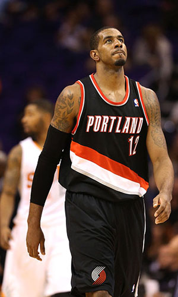

|  | Матчи | 71 | Передачи (всего/среднее) | 124 | 1.7 | |
| В основе | 71 | Подборы в защите (всего/среднее) | 549 | 7.7 | ||
| Время (всего/среднее) | 2511:37 | 35:22 | Подборы в атаке (всего/среднее) | 177 | 2.5 | |
| Очки (всего/среднее) | 1661 | 23.4 | Подборы (всего/среднее) | 726/font> | 10.2 | |
| 2-очковые броски (всего/среднее) | 622/1310 | 8.8/18.5 | Перехваты (всего/среднее) | 48 | 0.7 | |
| 2-очковые броски (% реализации) | 47.5% | Потери (всего/среднее) | 122 | 1.7 | ||
| 3-очковые броски (всего/среднее) | 37/105 | 0.1/0.5 | Блокшоты (всего/среднее) | 68 | 1 | |
| 3-очковые броски (% реализации) | 35.2% | Блокшоты соперника (всего/среднее) | 37 | 0.5 | ||
| Штрафные броски (всего/среднее) | 306/362 | 4.3/5.1 | Фолы (всего/среднее) | 125 | 1.8 | |
| Ламаркус Олдридж | Штрафные броски (% реализации) | 84.5% | Коэффициент полезности (всего/среднее) | 1531 | 21.6 |